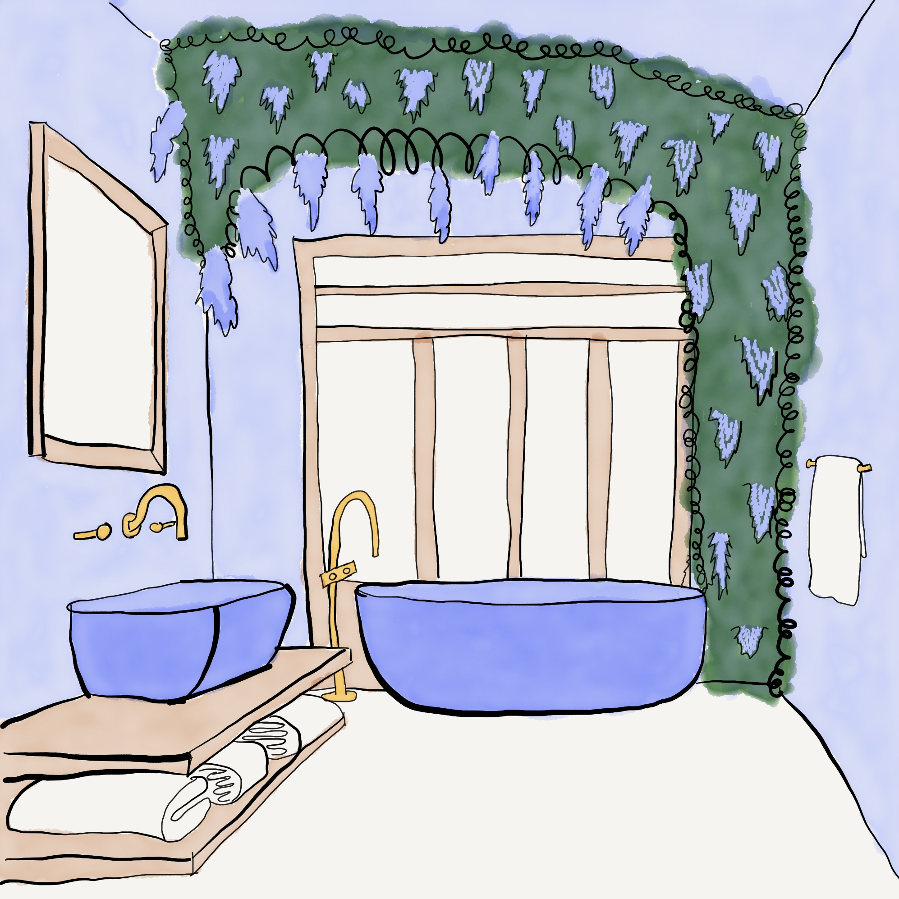

The Arboretum
the artist and their legacy/story
astrology axis
virgo/pisces
tarot major arcana
6. The Lovers
chakra
6. The Third Eye - Ajna
Welcome Home. This is the bathroom, where everyday practices become more than the sum of their parts.
Where we clean and groom and release and reflect.
Where we create space for our subconscious to speak.
Where we remember we are made of the earth and will return to it soon.

this website is a framework for homemaking
What is it?
The Abode is a playful psychological framework for organising and exploring areas of life and creation
What can I use it for?
Whatever you want!
Personal websites, bullet journals, portfolios, organising your closet, planning your week, or even just as a self-inquiry exercise.
Take what resonates. Play with it. Make it your own.
Github Code.
Email Me.
What was it made for?
I made The Abode because it's what I wished existed. I wanted a flexible (and colourful!) framework, that incorporated the dimensions of my interests, and had the breadth to house all my creations. I wanted a companion - a home that would live on outside of me - a corner of the internet. I use The Abode to:
1. stimulate exploration of my craft (and myself) through different perspectives (rooms), and
2. house the fruits of those explorations (my creations) in all their weird and wacky and wonderful forms.
Floorplan

Dimensions
| ID |
Room |
Function |
Realm |
Resource |
Day (Gregorian) |
Zodiac Astrology |
The Artists Way Reference |
| 0 |
Antechamber
Foyer |
To Come |
Instinctual |
Time |
Sunday |
Ophiuchus |
Recovering a sense of... |
| 1 |
Atelier
Study |
To Create |
Physical |
Recovery,
Touch,
Sensation |
Monday |
Aries/Libra |
Safety/Connection |
| 2 |
Alcove
Bedroom |
To Commune |
Emotional |
Warmth,
Clothing,
Shelter |
Tuesday |
Taurus/Scorpio |
Identity/Strength |
| 3 |
Apothecary
Kitchen |
To Cook |
Mental |
Education,
Knowledge
Information |
Wednesday |
Gemini/Sagittarius |
Power/Compassion |
| 4 |
Atrium
Dining |
To Consume |
Material |
Food, Water,
Air, Sunlight,
Sleep |
Thursday |
Cancer/Capricorn |
Integrity/Self-Protection |
| 5 |
Auditorium
Lounge |
To Converse |
Social |
Connection,
Belonging,
Expression |
Friday |
Leo/Aquarius |
Possibility/Autonomy |
| 6 |
Arboretum
Bathroom |
To Clean |
Spiritual |
Sanitation,
Hygiene,
Medicine |
Saturday |
Virgo/Pisces |
Abundance/Faith |